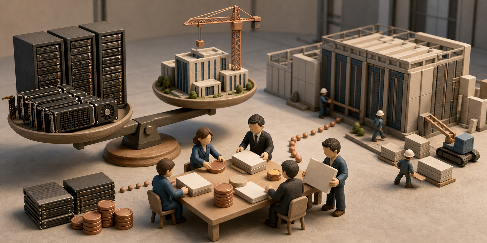

엔비디아, 대형 금융사 6곳과 AI 데이터센터에 5,000억 달러를 끌어올 계획 발표
AI 반도체 회사 엔비디아가 대형 금융사 6곳과 함께 AI 데이터센터를 지을 돈 5,000억 달러 이상을 모으겠다고 발표했다. 이미 그 돈이 들어왔다는 뜻은 아니다. 지금 체결된 것은 양해각서 여섯 건이고, 최종 계약과 금리·만기·담보는 공개되지 않았다. 쉽게 말해 엔비디아는 고객이 GPU와 데이터센터를 마련할 돈까지 금융사가 빌려주는 시장을 만들려 한다.

엔비디아가 8월 10일 낸 공식 발표에는 아폴로, 블랙록, 블랙스톤, 브룩필드, 골드만삭스, KKR이 참여했다. 이들은 엔비디아 GPU를 쓰려는 AI 연구소와 기업, AI 클라우드 사업자에게 돈을 빌려 줄 별도 자금 풀을 만들 계획이다. 회사는 고객이 더 낮은 부담으로 자금을 조달하도록 돕겠다고 설명했다.
여기서 ‘5,000억 달러를 동원한다’는 말은 오늘 준비된 현금을 뜻하지 않는다. 금융사들이 앞으로 여러 데이터센터를 심사하고, 자기자본과 대출을 합쳐 장기간 공급하겠다는 목표액이다. 발표문도 최종 계약이 체결돼야 실제 사업이 시작된다고 밝혔다.
Axios도 참여사와 목표액을 다시 확인했다. 동시에 GPU를 파는 회사가 고객의 구매 자금까지 마련하면 수요가 실제 필요 때문에 생긴 것인지, 금융 지원으로 앞당겨진 것인지 구분하기 어려워질 수 있다고 짚었다. 이것이 이번 소식에서 말하는 ‘순환금융’ 우려다.
발표 직전에는 파이낸셜타임스와 블룸버그 보도를 인용한 엘파이스도 월가 대형사들과 5,000억 달러 규모의 협의를 전했다. 이후 공식 발표에서 참여 회사와 목표액은 확인됐지만, 하나의 거대한 펀드가 만들어진다고 확정된 것은 아니다. 엔비디아는 여러 회사가 각각 운영하는 독립 플랫폼들을 말하고 있다.
5,000억 달러 발표를 세 층으로 읽기
확정된 양해각서와 앞으로 만들어야 할 금융 구조, 아직 비어 있는 계약 조건을 분리했다.
- 독립 컴퓨트 금융 플랫폼 추진
- 제3자 자본 5,000억 달러 이상 목표
- 엔비디아 고객을 자금 공급 대상으로 명시
- 프런티어 연구소·기업·AI 클라우드 심사
- 프로젝트별 자기자본과 대출 조합
- GPU·시설·전력과 사용 계약을 묶는 구조
- 금리·만기·담보인정비율
- 첫 종결 금액과 투자 대상
- 손실 시 엔비디아의 보증·재매입 의무
한 줄 요약: 5,000억 달러는 현재 보유 현금이 아니라 여러 최종 계약이 성사될 때 장기간 동원하겠다는 목표치다.
왜 반도체 회사가 고객의 돈까지 구하나
AI 데이터센터 한 곳을 지으려면 GPU만 사서는 끝나지 않는다. 네트워크 장비와 냉각 시설, 토지, 변전 설비, 장기 전력 계약을 함께 마련해야 한다. 공사를 시작한 뒤 서비스 요금을 받기까지 큰돈이 오래 묶이기 때문에, 기술은 있어도 자금이 없으면 데이터센터를 짓지 못한다.
엔비디아는 GPU가 계속 AI 답변을 만들고 사용료를 벌어들이므로, 데이터센터도 발전소나 항공기처럼 장기간 돈을 빌려 살 수 있다고 주장한다. 회사는 자사 소프트웨어 CUDA가 다양한 AI 작업을 지원해 장비를 오래 활용할 수 있다는 설명도 덧붙였다. 다만 이것은 엔비디아의 사업 논리다. GPU의 중고 가격이나 장기 수익을 보장하는 독립 평가는 아니다.
금융사에는 새 대출 시장이 열린다. 골드만삭스는 엔비디아 장비를 바탕으로 한 신용 시장을 언급했고, 아폴로는 장기 자금을, 브룩필드와 KKR은 데이터센터와 전력 설비 운영 경험을 내세웠다. 한 회사가 돈을 빌려 주고, 다른 회사가 건물을 소유하며, 장기 투자자가 뒤에서 자금을 대는 역할 분담이 가능하다.
비슷한 거래는 이미 시작됐다. 아폴로는 6월 브로드컴의 AI XPV 플랫폼에 초기 350억 달러 자금을 주도한다고 발표했다. 당시에도 컴퓨팅 장비와 고객이 내는 사용료를 묶어 투자 대상으로 삼았다. 엔비디아는 이 일을 자사 고객 전체로 넓히려 한다.
GPU도 항공기처럼 빌려 살 수 있을까
비싼 장비를 빚으로 사는 일 자체는 낯설지 않다. 항공사는 항공기를 빌려 쓰고, 통신사는 기지국과 광섬유를 장기 대출로 늘린다. AI 데이터센터도 고객이 꾸준히 사용료를 내고 장비의 중고 가치가 투명하다면 같은 방법으로 성장할 수 있다. 금액이 크다는 이유만으로 곧바로 거품이라고 단정할 수는 없다.
문제는 GPU가 발전소 터빈보다 빨리 낡을 수 있다는 점이다. 새 GPU가 같은 전기로 훨씬 많은 AI 계산을 해내면 이전 제품의 임대료와 중고 가격이 떨어진다. CUDA 업데이트가 장비 수명을 늘린다는 엔비디아의 설명이 맞더라도, 실제 가치는 고객 수요와 경쟁 칩 가격까지 함께 움직인다.
고객이 몇 곳에 몰리는 것도 위험하다. 대형 AI 연구소나 신생 AI 클라우드가 장기 계약의 대부분을 차지했는데 한 곳이 예상한 매출을 내지 못하면, GPU 임대료와 데이터센터 대출, 전력 계약이 동시에 흔들릴 수 있다.
엔비디아는 GPU 판매가 늘면 돈을 벌고, 고객에게 자금이 공급돼도 다시 GPU 수요가 생기는 위치에 있다. 월스트리트저널은 7월 엔비디아가 오픈AI의 오하이오 10기가와트 프로젝트에 약 2,500억 달러의 금융 보증을 검토했다고 보도했다. 하지만 Axios는 그 논의가 이번 플랫폼에 포함되는지 분명하지 않다고 적었다. 검토 보도와 8월 10일 발표를 합쳐 보증이 확정됐다고 말해서는 안 된다.
돈을 확보해도 데이터센터가 바로 생기지는 않는다. 송전망 연결과 발전 허가, 냉각수, 변압기, 숙련 인력은 금융사가 만들어 낼 수 없다. 여러 프로젝트가 한꺼번에 공사를 시작하면 오히려 장비와 전력 가격이 올라 수익이 줄 수도 있다.
딜로이트의 2026년 반도체 산업 전망도 칩 회사와 클라우드 회사, AI 모델 회사 사이에서 돈과 컴퓨팅이 오가는 현상을 일부 분석가가 ‘순환금융’이라고 부른다고 설명했다. 이름보다 계약 조건이 중요하다. 금융사가 엔비디아와 독립적으로 대출을 심사하는지, 엔비디아가 손실을 얼마나 보증하는지, 실제 외부 고객이 사용료를 내는지 확인해야 한다.
성공하면 AI 사용료가 내려갈 수 있지만, 약속된 것은 아니다
계획대로 데이터센터가 빨리 늘면 AI 서비스 회사가 GPU를 구하지 못해 기다리는 일이 줄 수 있다. 작은 AI 클라우드나 일반 기업도 장비값을 한꺼번에 현금으로 내지 않고 대규모 GPU를 쓸 수 있다. 공급자가 많아지면 API 사용료 경쟁에도 도움이 될 수 있다.
그러나 금융이 생겼다고 가격이 바로 내려가는 것은 아니다. 빌린 돈의 금리와 전기요금이 높거나 데이터센터가 충분히 사용되지 않으면 그 비용이 AI 사용료에 붙는다. 이용자는 값싼 GPU가 아니라 빚을 갚아야 하는 GPU를 쓸 수도 있다.
자금이 엔비디아 DSX와 네트워크, CUDA를 한꺼번에 쓰는 시설에 몰리면 개발자는 도구와 공급을 쉽게 얻는 대신 엔비디아 기술에서 빠져나오기 어려워질 수 있다. AMD와 자체 가속기, 중국산 칩은 성능뿐 아니라 대출 조건에서도 불리해질 가능성이 있다.
기업 구매팀은 GPU 대수보다 계약에서 빠져나올 수 있는지를 봐야 한다. 5년 이상 약정한다면 새 GPU로 바꿀 수 있는지, 다른 칩으로 옮길 수 있는지, 최소 사용량은 얼마인지, 남는 용량을 다시 팔 수 있는지가 중요하다. 처음에는 싼 계약이 기술이 바뀐 뒤 비싼 고정비로 남을 수 있다.
한국에서도 이미 비슷한 돈의 흐름이 시작됐다
이 계획은 한국과도 바로 연결된다. 엔비디아·네이버·브룩필드가 7월 24일 발표한 계획에는 세종의 55메가와트 시설을 2028년 200메가와트로 키우는 내용이 담겼다. 브룩필드는 최대 90억 달러의 비구속적 조건서를 냈고, 엔비디아는 10억 달러를 투자할 계획이다. 아직 최종 조달과 거래 종결 조건이 남았으므로 이미 모든 돈이 지급됐다고 볼 수는 없다.
같은 날 SK그룹과 엔비디아는 최대 2기가와트 AI 팩토리와 SK하이닉스 HBM 협력 계획도 발표했다. 8월 10일 발표는 이 한국 사업들을 새 금융 플랫폼의 첫 거래라고 밝히지 않았다. 다만 플랫폼이 실제로 출범하면 한국의 데이터센터와 전력, HBM, 네트워크 사업도 장기 자금을 받을 후보가 될 수 있다.
SK하이닉스와 삼성전자에는 GPU 판매 증가가 HBM과 첨단 패키징 주문을 늘릴 기회다. 반대로 금융으로 수요를 미리 당겨 놓은 뒤 데이터센터 사용률이 낮으면 주문 변동도 커질 수 있다. 발표된 총액보다 실제 전력 공급 날짜와 고객 계약, HBM 출하량과 재고를 봐야 한다.
국내 통신사와 클라우드 회사에는 돈을 얼마나 싸고 오래 빌리느냐가 경쟁력이 된다. 같은 GPU를 사더라도 낮은 금리와 긴 만기, 쉬운 업그레이드 조건을 얻은 회사가 AI 사용료를 더 낮출 수 있다. 금융사나 엔비디아 한 곳에 묶이지 않도록 여러 종류의 AI 칩과 고객을 받을 수 있게 설계하는 것도 중요하다.
GPU가 ‘투자 가능한 자산’이 될 때 돈이 도는 길
금융 플랫폼은 칩 구매만이 아니라 시설·전력·장기 사용 계약을 하나의 현금흐름으로 묶으려 한다.
이해상충 질문: 장비 공급자가 금융 생태계의 성장에서도 이익을 얻으므로, 대출 심사와 잔존가치 평가는 공급자의 판매 전망과 분리돼야 한다.
정부와 지방자치단체는 투자액만 세어서는 안 된다. 송전망을 늘리는 비용, 지역 전기요금, 실제 고용, 냉각수 사용, 비상발전기 오염, 오래된 시설을 누가 처리할지까지 계약에 넣어야 한다. 해외 자본이 들어와도 지역 인프라 비용을 세금으로 떠안으면 한국에 남는 이익은 달라진다.
다음에는 5,000억 달러보다 이 다섯 가지를 봐야 한다
첫째, 양해각서가 최종 계약으로 바뀌는지 봐야 한다. 실제로 얼마가 언제 모였는지, 여섯 회사가 함께 움직이는지 각자 플랫폼을 만드는지도 아직 모른다. 둘째, 투자금과 대출금의 비율, 금리, 만기, 담보로 인정하는 GPU 가치가 공개돼야 한다.
셋째, GPU 가격이 떨어졌을 때 누가 손실을 떠안는지 확인해야 한다. 엔비디아가 장비를 다시 사 주거나 새 제품으로 바꿔 준다면 금리는 낮아질 수 있지만, 엔비디아가 나중에 갚아야 할 부담은 커진다. 넷째, 실제 사용료를 내는 고객이 누구이고 계약이 얼마나 오래가는지 봐야 한다.
다섯째, 돈을 받은 데이터센터가 실제로 전기를 공급받아 유료 서비스를 시작하는지 확인해야 한다. 발표 목표액, 금융 계약액, 공사비, 전력이 들어온 설비, 고객이 돈을 내고 쓰는 용량은 모두 다른 숫자다.
결국 엔비디아는 AI 칩만 파는 데서 멈추지 않고, 누가 데이터센터를 지을 돈을 받을지에도 영향력을 넓히려 한다. 자금이 제대로 공급되면 개발자와 기업은 더 많은 AI 컴퓨팅을 쓸 수 있다. 그러나 기술과 장비, 고객, 금융이 한 회사 주변에 모이면 실패했을 때 위험도 함께 커진다. 지금은 5,000억 달러라는 제목보다 최종 계약과 독립적인 대출 심사, 실제 고객 수요, 전력 공급을 확인할 때다.
출처와 더 읽을 자료
- NVIDIA: AI 컴퓨트 인프라 금융 플랫폼 공식 발표
- Axios: Nvidia and Wall Street partner on $500B AI financing
- El País: Nvidia와 월가의 5,000억 달러 AI 금융 협의
- The Wall Street Journal: 오픈AI 오하이오 데이터센터 보증 논의
- Apollo: Broadcom AI XPV 350억 달러 자본 솔루션
- Deloitte: 2026 Global Semiconductor Industry Outlook
- NVIDIA·NAVER·Brookfield 한국 AI 팩토리 확대 계획
- NVIDIA·SK그룹 AI 팩토리·차세대 메모리 협력 계획